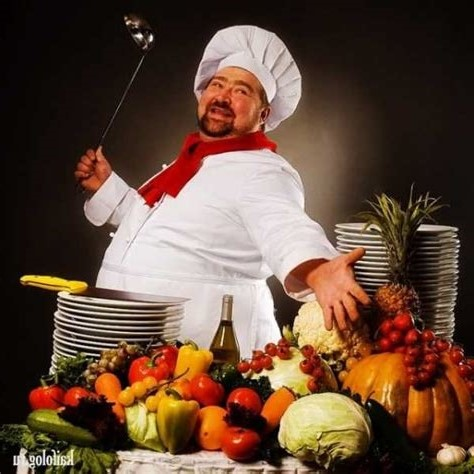

- Пол
- Опыт работы
- Январь 2012 – работает сейчас 11 лет и 10 месяцев
- Февраль 2008 – октябрь 2011 3 года и 9 месяцев
- Июль 2005 – февраль 2008 2 года и 8 месяцев
- Образование Среднее специальное образование Дневная/Очная
- Обо мне Профессиональные навыки: — уверенное знание технологического оборудования и процессов приготовления блюд; — умение разбираться в качестве и свежести мяса, рыбы, овощей и фруктов; — знание способов сокращения потерь и сохранения питательной ценности продуктов при их тепловой обработке; — навыки приготовления блюд русской, европейской, кавказской, азиатской кухни; — знание правил Санэпиднадзора; — умение быстро и точно на глаз определять нужное количество жидкости, сыпучих продуктов, специй; — наличие действительной медицинской книжки; — знание компьютерных программ Word, Excel, R-Keeper.
- Иностранные языки Французский язык — базовый
- Водительские права B — легковые авто
Повар
«Дикий Кот», ресторан авторской кухни (300 посадочных мест),
Москва
Обязанности:
— Ежедневно готовил по 50 горячих блюд (русской, европейской, азиатской кухни) в соответствии с
технологическими и калькуляционными картами ресторана без задержек и нареканий, о чем свидетельствуют
многочисленные благодарности от гостей ресторана. — Еженедельно осуществлял контроль за сроком годности и
условиями хранения продукции. Контролировал поступление товаров в согласованном количестве. Добился снижения
цен у поставщиков, благодаря чему ежемесячная экономия составила 20%. — Оказывал помощь на других участках
кухни при большой загруженности ресторана, что позволяло сокращать время подачи блюд на 10—15%. — Разработал
2 новых рецепта, которые прошли согласование и были внесены в сезонное меню. — Принимал участие в разработке
банкетного меню из 25 блюд , которое было одобрено заказчиком без замечаний и принесло прибыль за месяц
500000 рублей. — Разработал диетическое меню, которое позволило повысить лояльность гостей и увеличить
количество постоянных посетителей в 2 раза.
Су-шеф
«West Holiday» (ресторан американской кухни, 200 посадочных мест), Москва
Обязанности:
- готовил блюда в соответствии с технологическими картами; - разделывал туши и полутуши на полуфабрикаты; -
проводил уборку, мойку и дезинфицирование рабочего места. Достижения: За качественную работу был переведён
на должность су-шефа.
Повар
«West Holiday» (ресторан американской кухни, 200 посадочных мест), Москва
Обязанности:
- готовил блюда в соответствии с технологическими картами; - разделывал туши и полутуши на полуфабрикаты; -
проводил уборку, мойку и дезинфицирование рабочего места. Достижения: За качественную работу был переведён
на должность су-шефа.
2005
Технологический колледж №28 Специальность: Повар
Дополнительные сведения: Креативность,
чувство вкуса и искреннее увлечение работой помогают мне создавать новые блюдаи оригинальные виды презентации.